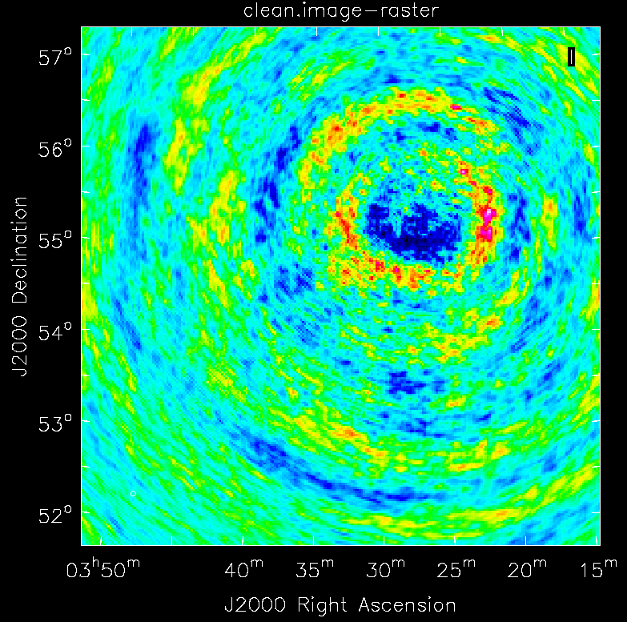
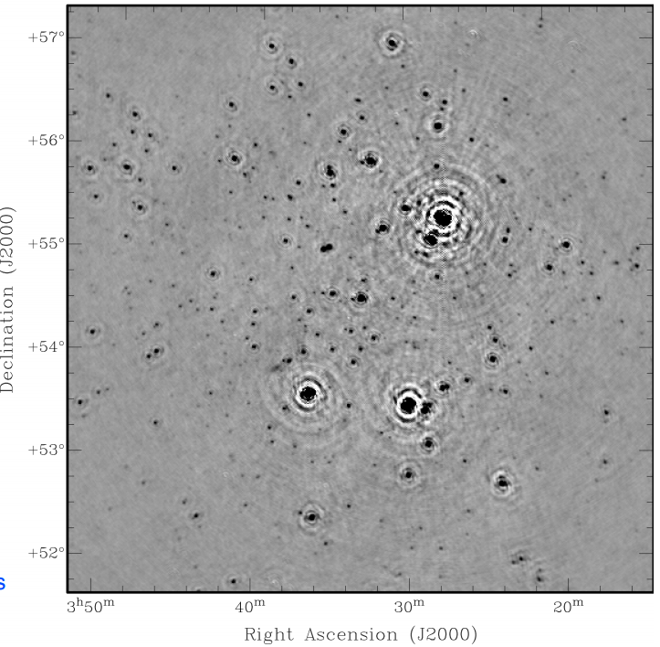

In this lab we will try to apply the principles of imaging from radiointerformetry data. The visibilities data set we work from is real, but I fear slightly uninspiring in terms the image it yields. Nevertheless the principles apply to more interesting data (up to and including the iconic M87* black hole image).
A simple imaging program
As in the past few weeks, I will give you a head start by providing an outline program. Please download the Java file Imaging.java.
The main method of the main class in this file looks like this:
public static void main(String [] args) throws IOException {
float reVis, imVis ;
float U, V ;
// Read data from "vis-and-uv.txt"
BufferedReader in = new BufferedReader(
new InputStreamReader(new FileInputStream("vis-and-uv.txt"))) ;
// FT of visibilities
double rawImage [] [] = new double [N] [N] ;
double dirtyBeam [] [] = new double [N] [N] ;
int k = 0 ;
DisplayUV display1 = new DisplayUV(15000.0f) ;
while(true) {
String line = in.readLine() ;
if(line == null) break ;
String [] fields = line.split("\\s+") ;
float XXAmp = Float.parseFloat(fields [0]) ;
float XXPhs = Float.parseFloat(fields [1]) ;
float XYAmp = Float.parseFloat(fields [2]) ;
float XYPhs = Float.parseFloat(fields [3]) ;
float YXAmp = Float.parseFloat(fields [4]) ;
float YXPhs = Float.parseFloat(fields [5]) ;
float YYAmp = Float.parseFloat(fields [6]) ;
float YYPhs = Float.parseFloat(fields [7]) ;
float u = Float.parseFloat(fields [8]) ;
float v = Float.parseFloat(fields [9]) ;
double XXPhsRad = Math.PI * (XXPhs / 180) ;
double YYPhsRad = Math.PI * (YYPhs / 180) ;
// Take sum of XX and YY polarizations
reVis = (float) (XXAmp * Math.cos(XXPhsRad) +
YYAmp * Math.cos(YYPhsRad)) ;
imVis = (float) (XXAmp * Math.sin(XXPhsRad) +
YYAmp * Math.sin(YYPhsRad)) ;
U = u / WAVELENGTH ;
V = v / WAVELENGTH ;
display1.addPoint(U, V) ;
for (int i = 0 ; i < N ; i++) {
double l = (i - N / 2) * CELL ;
for (int j = 0 ; j < N ; j++) {
double m = (j - N / 2) * CELL ;
double arg = 2 * Math.PI * (l * U + m * V) ;
double cos = Math.cos(arg) ;
double sin = Math.sin(arg) ;
rawImage [i] [N - j - 1] += reVis * cos - imVis * sin ;
dirtyBeam [i] [N - j - 1] += cos ;
}
}
k++ ;
if(k % 10000 == 0) {
System.out.println("k = " + k) ;
display1.repaint() ;
}
}
// Plot image
DisplayDensity display2 =
new DisplayDensity(rawImage, N, "Dirty image") ;
// Plot dirty beam
DisplayDensity display3 =
new DisplayDensity(dirtyBeam, N,
"Point spread function") ;
}
(The file Imaging.java also contains the definition of a
class DiplayUV, used to display coverage of the u, v
plane in the input data set.)
We will be calculaing the inverse Fourier transform of some visiblities read, together with their corresponding u, v values, from lines of a file.
As presented on slide 17 of this week's lecture, this transform is a sum over u, v values, for each pixel i, j (corresponding to some pair of direction cosines l, m). But the structure of the input data suggests dealing with u, v values in the outermost loop (which reads lines containing u, v values from the input file). Then inner loops over i, j accumulate contributions from this u, v pair to every pixel i, j.
This arrangement will also facilitate optimization of the inner loops, because they loop over regularly spaced l, m values, whereas u, v are irregularly spaced and less amenable to simple optimizations. It is always a good idea to make inner loops easy to optimize.
So the main while(true) loop is reading lines from the input file "vis-and-uv.txt". It splits each line into separate fields and extracts visibilities and u, v values from these fields.
This is actually a LOFAR data set, and it turns out there are four complex visibilities corresponding to four possible polarizations of the radio waves received. We just consider an overall unpolarized signal by adding together XX and YY components of polarization, which is what is computed in the assignment to reVis and imVis (the input file represents the complex numbers by their separate amplitudes and phases).
The inner loops over i, j deal with the range of values of the angular variable l and m in the image. These loops should look similar to other loops we have seen calculating Fourier transforms in previous weeks. The array rawImage accumulates the inverse Fourier transform of the visibilites. The array dirtyBeam accumulates the "dirty beam" as defined on slide 24 of the lecture.
Download the input file vis-and-uv.txt. This could take some time because it is a 100MB file. It contains the better part of 2 million lines, each corresponding to a single reading.
The program uses the support class DisplayDensity provided in week 1. I suggest you edit this to set CELL_SIZE = 4, otherwise the displayed images will look rather small.
You should now be able to run the Imaging program as it stands. The drawback is that it will be very slow, and may not finish before the end of the lab session.
As it runs the program displays the u, v coverage of entries read so far. The file seems to be arranged in chronological order of when the readings were taken, so you should be able to see this coverage steadily improve as the Earth rotates.
Postscript
The image you produce is likely to be slightly non-descript and disappointing.
I inherited this dataset from a Ph.D. student who was working with the LOFAR team a few years ago. Unfortunately I think the measurement set he downloaded from LOFAR may not have been the proper data for this group of sky observations.
I am pretty happy that our simple processing of the data is sound, because I have loaded the same measurement set into CASA, a standard software package used by astronomers for imaging and other tasks. That gives the following image:

This has recognizably the same structure as output from our Imaging program.
But while preparing this lab script I found a publication from LOFAR that happens to contain an image of the same area of sky, and it looks completely different (and much more interesting):

The position of the central "swirl" of our image does closely match that of the strongest source in the official version (in the upper left quadrant). But otherwise we have lost all detail.
As I said, I suspect my student downloaded a measurement set that was perhaps uncalibrated data or perhaps some kind of subtraction or residual byproduct of the proper processing.Unfortunately I no longer have any direct way to access LOFAR data. But there are now many public data and science archives from radio telescopes where it should be possible to download more interesting visibility data. In principle it should just be a matter of converting this data to a readable format... sadly I ran out of time for this practical.
By the way the text file "vis-and-uv.txt" was extracted from an original CASA format measurement set using the CASA listvis task. I had to truncate the last 5% of the file to fit the text file into the 100MB upload limit of Moodle!